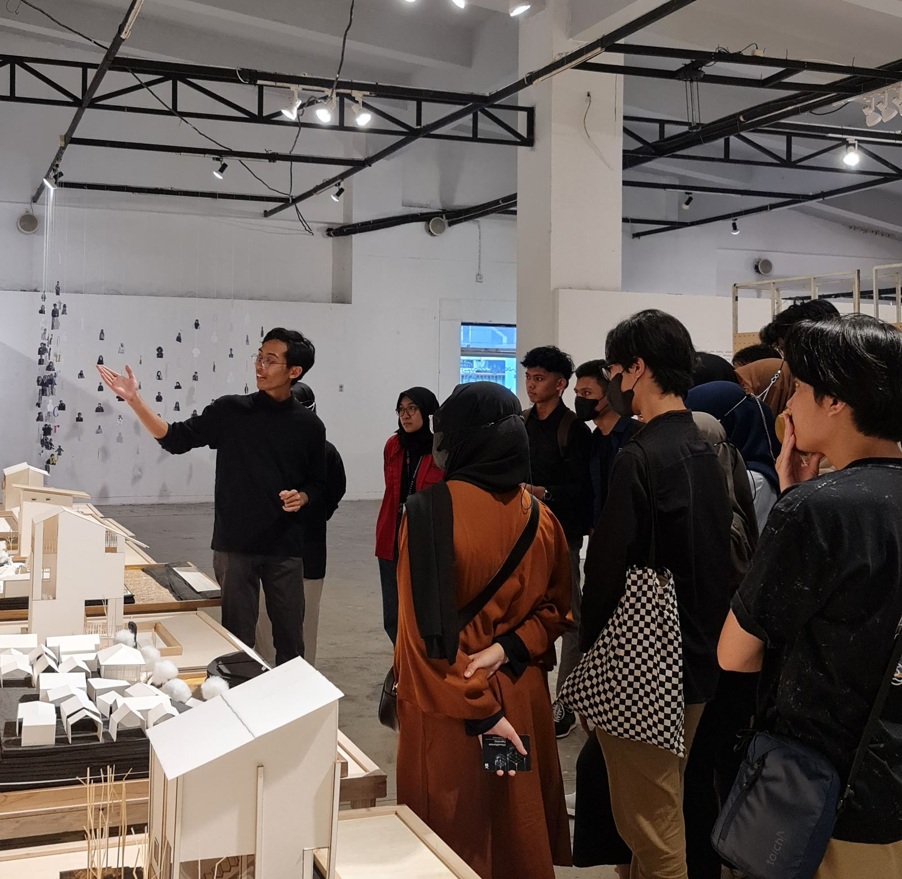

Architectural designer specialising in hospitals. I design buildings and landscapes, simulate how they perform (evacuation, energy, acoustics) and write the software that makes the work faster. I lived in Tokushima, Japan, for four years.

| Competition | Result | Date |
|---|---|---|
| AYDA Asia Young Designer Award (Nippon Paint), Indonesia | National Grand Finalist | 2025 |
| AFAIR UI 2024 Architecture Competition | 3rd Prize | 2023 |
| DISCO 6th, Sekolah Vokasi UNDIP | Juara Harapan 1 | 2023 |
| National student housing competition, SAPPK ITB | Honorable Mention | 2022 |